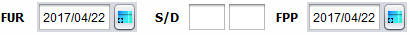

AYUDA PARA LA VENTANA "NUEVA CONSULTA MÉDICA"
Pulsando el boton  , dicho botón lo puede localizar en el menú principal que se encuentra en la parte superior de la ventana, opción número 3, la otra opción es dar doble "click" sobre la tabla de pacientes para pre visualizar los datos, a la vez de poder ver el historial de consultas de dicho paciente
, dicho botón lo puede localizar en el menú principal que se encuentra en la parte superior de la ventana, opción número 3, la otra opción es dar doble "click" sobre la tabla de pacientes para pre visualizar los datos, a la vez de poder ver el historial de consultas de dicho paciente
oprimir se abrirá la siguiente ventana.
En esta ventana usted podrá realizar una nueva consulta medica para determinado paciente por medio de su expediente médico.
El funcionamiento de esta ventana consiste en rellenar los campos de con los datos correspondientes, los componentes principales son los siguientes:
-
Al oprimir este botón se desplegaran las siguientes opciones:
- Pendiente
Al elegir esta opción se asume que la próxima cita queda sujeta a la fecha que sea requerida por el paciente.
- Cita
Al elegir esta opción se desplegará un calendario
Con este calendario usted podrá elegir la fecha de "Próxima cita" en la cual crea conveniente para el seguimiento del paciente.
- Al reglar
Con esta opción la cita médica queda sujeta a la fecha en que la paciente tiene su último periodo
-

Con estas opciones FUR: Fecha ultima Regla al elegir una fecha en este calendario automáticamente se calculara el lapso de gestación de 40 semanas esto se asignara en FPP(Fecha Probable Parto) para tener una proyección de que día será asumido para el nacimiento
S/R: respectivamente se calcula el número de semana y días.
-
Al oprimir este botón los datos ingresados en los campos requeridos, estos se guardaran en la base de datos
TODO write content